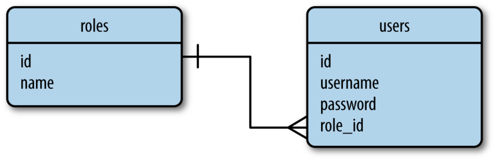
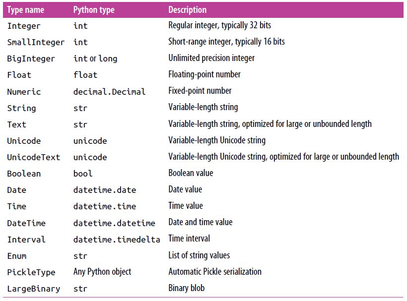
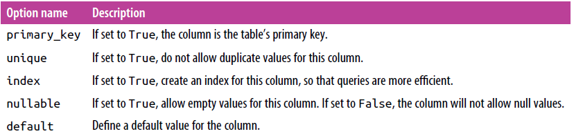

Database and flask
Which database?
- There are a number of factors to evaluate when choosing a database framework:
- Ease of use
- Performance
- Portability
- Flask integration
- Based on these, we will learn…
Database
- In this class, we will learn:
- Relational DB:
- SQLAlchemy
- PostgreSQL
- Examples are based on HTTP requests that we have learned.
- Relational DB:
Setup and hello world
- Example 39
- PLACE LINK 39 HERE
- How to set up SQLAlchemy.
- 404 Page: default for service not fount error
- 500 Page: default for server errors, need to turn off debug mode

-
db.Column first possible parameters 
-
db.Column second possible parameters 
-
db.create_all() function locates all the subclasses of db.Model and creates corresponding tables in the database for them.
-
db.session.commit(), you need to commit your changes (insert, delete, modify) and then the DB will be updated
Data Display and Interaction
- Example 40_hole
- Buttons to interact with DB
- Interactions:
- Querying rows
- Delete rows.
-
Challenge:
- place all existing users in the select list
- Deleting chosen user with MY_DELET request.
- user filter to find the chosen user
- We will learn how to clean Example 40 when we learn Flask migration and web forms.
| Index | Prev | Next |